Feito com as próprias mãos.
Madeira, paletes e criatividade. A habilidade de Flávio e o cuidado da família deram personalidade a cada canto.
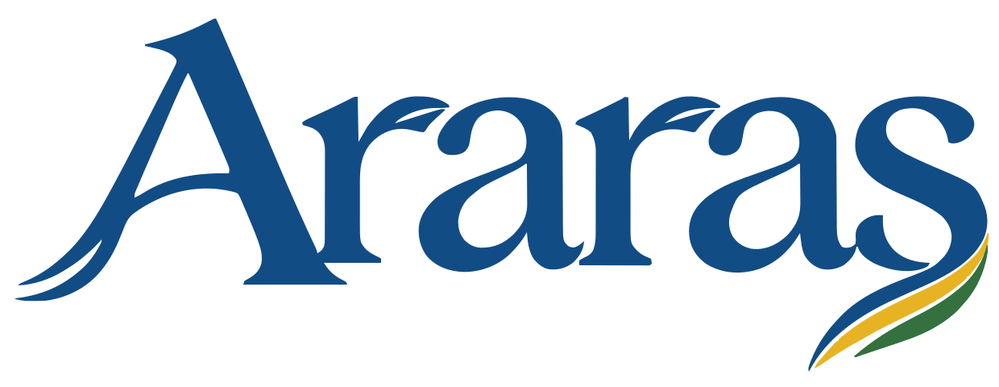
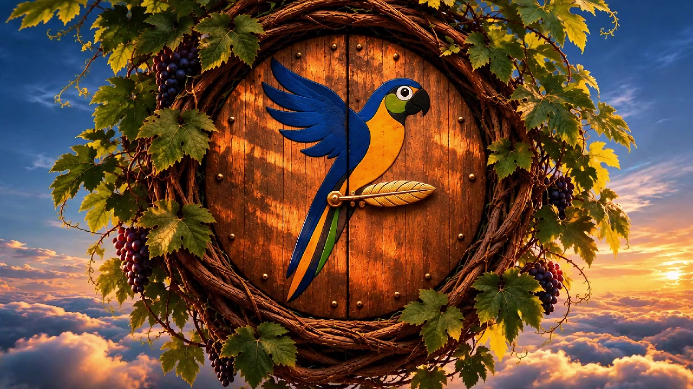
Deixe a arara mostrar o caminho.
Tem coisa que só se descobre voando.
Receitas mineiras, porções originais e o queijo da Canastra que dá identidade à nossa cozinha.
Com molho de queijo da Canastra.
Explore os detalhes nas fotografias da casa.
A apresentação em giro 3D será acrescentada com as capturas dos pratos e drinks. Por enquanto, conheça as fotografias originais.
Linguiça mineira · Panceta · Romeu e Julieta · Traíra desossada
Carne seca · Costela · Filé mignon · Filé de tilápia · Bacalhau · Camarão
Bombom de camarão · Quibe recheado com queijo Canastra · Bolinho quatro queijos
Uma porção completa para compartilhar com até seis pessoas. A versão família serve até doze pessoas.
Uma jantinha com a identidade da casa. Consulte as porções disponíveis na versão à la carte.
O molho de queijo da Canastra é o carro-chefe do Araras. Ele acompanha algumas das nossas porções e traduz a presença do queijo Canastra na culinária da casa.
Criações da casa para acompanhar a conversa e os sabores do Araras.
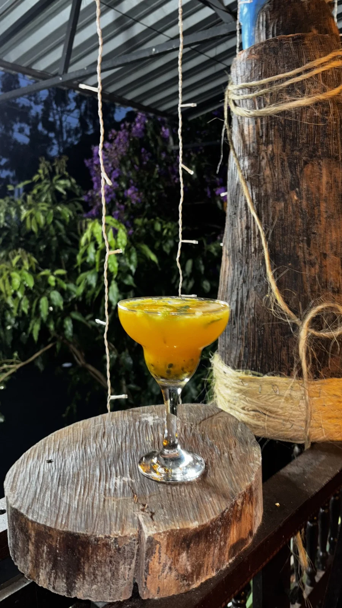
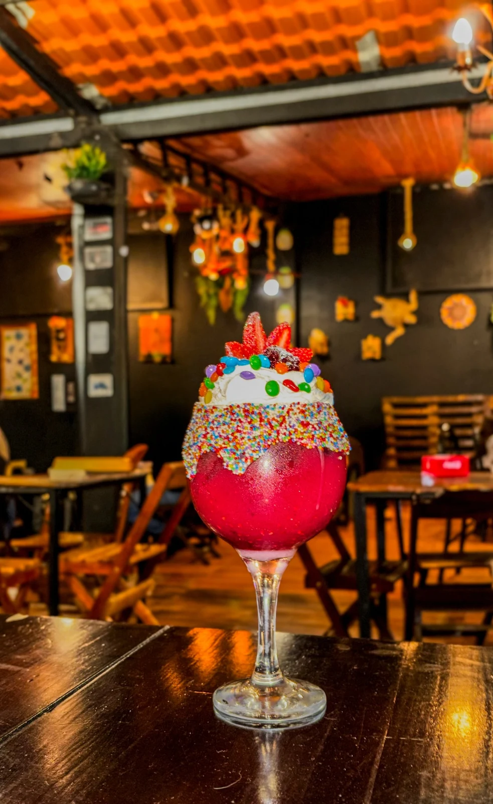
Um espaço dedicado à seleção de vinhos do Araras e aos encontros à mesa.
A carta de vinhos será apresentada aqui.
Cervejas, guaraná, refrigerantes e as outras opções de bebidas da casa.
Marcas, tamanhos e opções serão detalhados com o cardápio.
Explore ideias de porções e bebidas para o seu encontro.
Uma garagem, quatro mesas feitas à mão e a vontade de receber bem. Flávio e Marcela foram transformando a própria casa, encontro por encontro.
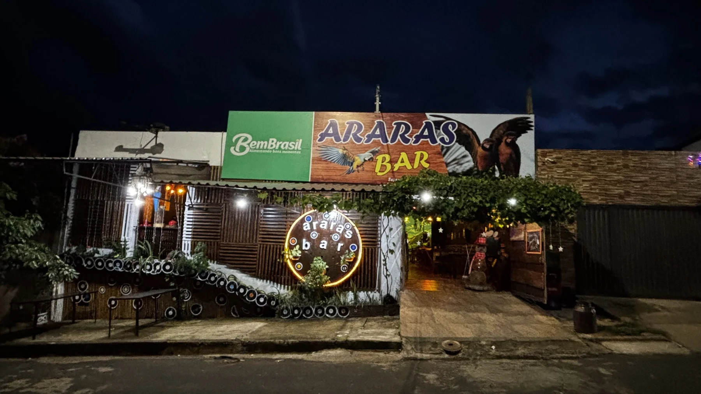
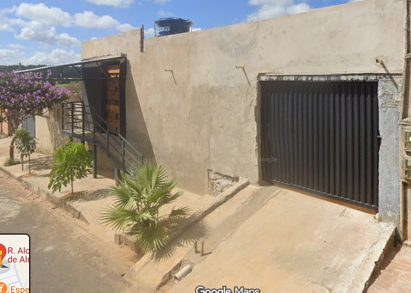
Madeira, paletes e criatividade. A habilidade de Flávio e o cuidado da família deram personalidade a cada canto.
A cozinha de Marcela carrega a cultura de São Roque de Minas e o aprendizado com sua mãe, Tereza.
Uma arara passou a frequentar a casa. A homenagem à ave se tornou nome, símbolo e parte da identidade do lugar.
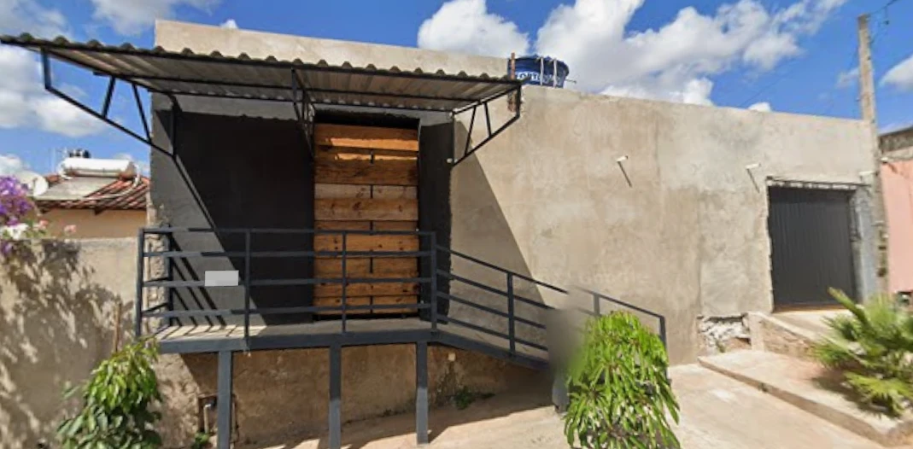
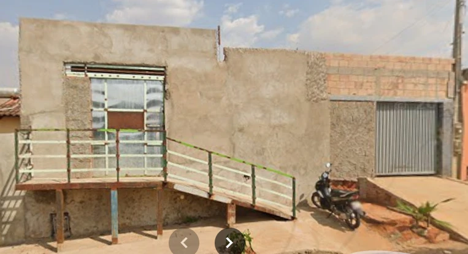
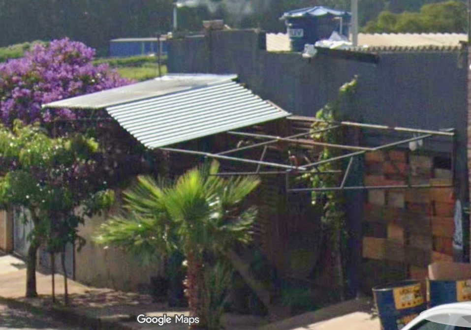
Reconhecido no Papo de Boteco
Grafites, plantas e histórias fazem parte desse encontro com o bairro.
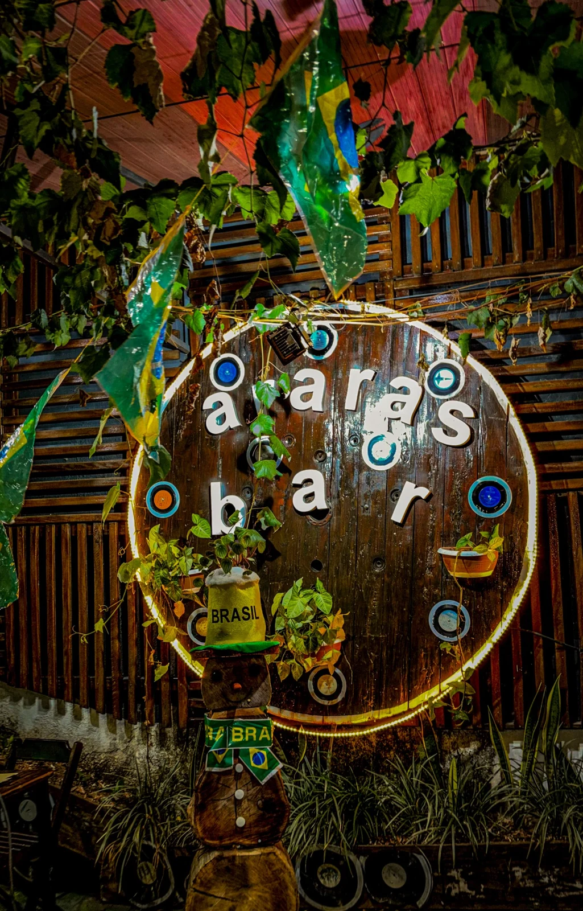
A mesma identidade que acolhe na casa acompanha novas ideias, objetos e encontros. Uma base para o próximo capítulo do Araras.
Estudo de identidade e aplicações da marca.
Azul, amarelo, verde e uma arara que carrega a história da casa.
Cultura, gastronomia e novas possibilidades para a marca crescer com suas raízes.
Vem encontrar a gente
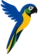

Terra
Arraste para girar · Role para aproximar
Rua Aloísio Antônio de Almeida, 60 · Jardim das Oliveiras, Araxá–MG
Traçar rota